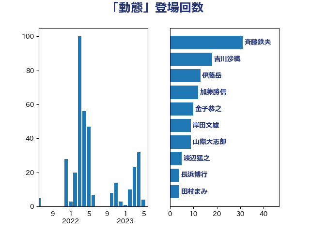

単語「動態」

| 斉藤鉄夫 | 公明党 | 31 回 |
| 吉川沙織 | 立憲民主党 | 18 回 |
| 伊藤岳 | 日本共産党 | 13 回 |
| 加藤勝信 | 自由民主党 | 12 回 |
| 金子恭之 | 自由民主党 | 10 回 |
| 岸田文雄 | 自由民主党 | 9 回 |
| 山際大志郎 | 自由民主党 | 9 回 |
| 渡辺猛之 | 自由民主党 | 5 回 |
| 長浜博行 | 無所属 | 4 回 |
| 田村まみ | 国民民主党 | 4 回 |
| 小沢雅仁 | 立憲民主党 | 4 回 |
| 仁木博文 | 無所属 | 4 回 |
| 中山展宏 | 自由民主党 | 4 回 |
| 高橋千鶴子 | 日本共産党 | 3 回 |
| 足立康史 | 日本維新の会 | 3 回 |
| 西銘恒三郎 | 自由民主党 | 3 回 |
| 田中健 | 国民民主党 | 3 回 |
| 河西宏一 | 公明党 | 3 回 |
| 市村浩一郎 | 日本維新の会 | 3 回 |
| 奥野総一郎 | 立憲民主党 | 3 回 |
| 鈴木俊一 | 自由民主党 | 2 回 |
| 野田国義 | 立憲民主党 | 2 回 |
| 道下大樹 | 立憲民主党 | 2 回 |
| 藤岡隆雄 | 立憲民主党 | 2 回 |
| 萩生田光一 | 自由民主党 | 2 回 |
| 緒方林太郎 | 無所属 | 2 回 |
| 竹谷とし子 | 公明党 | 2 回 |
| 礒崎哲史 | 国民民主党 | 2 回 |
| 石垣のりこ | 立憲民主党 | 2 回 |
| 盛山正仁 | 自由民主党 | 2 回 |
| 牧山ひろえ | 立憲民主党 | 2 回 |
| 源馬謙太郎 | 立憲民主党 | 2 回 |
| 横山信一 | 公明党 | 2 回 |
| 杉尾秀哉 | 立憲民主党 | 2 回 |
| 後藤茂之 | 自由民主党 | 2 回 |
| 庄子賢一 | 公明党 | 2 回 |
| 川田龍平 | 立憲民主党 | 2 回 |
| 山添拓 | 日本共産党 | 2 回 |
| 宮本岳志 | 日本共産党 | 2 回 |
| 伊波洋一 | 無所属 | 2 回 |
| 伊佐進一 | 公明党 | 2 回 |
| 中野英幸 | 自由民主党 | 2 回 |
| 一谷勇一郎 | 日本維新の会 | 2 回 |
| 高木宏壽 | 自由民主党 | 1 回 |
| 須藤元気 | 無所属 | 1 回 |
| 階猛 | 立憲民主党 | 1 回 |
| 長友慎治 | 国民民主党 | 1 回 |
| 重徳和彦 | 立憲民主党 | 1 回 |
| 西野太亮 | 自由民主党 | 1 回 |
| 西岡秀子 | 国民民主党 | 1 回 |
| 藤田文武 | 日本維新の会 | 1 回 |
| 若松謙維 | 公明党 | 1 回 |
| 芳賀道也 | 国民民主党 | 1 回 |
| 細田健一 | 自由民主党 | 1 回 |
| 稲津久 | 公明党 | 1 回 |
| 神津たけし | 立憲民主党 | 1 回 |
| 石田昌宏 | 自由民主党 | 1 回 |
| 石橋通宏 | 立憲民主党 | 1 回 |
| 石井苗子 | 日本維新の会 | 1 回 |
| 泉健太 | 立憲民主党 | 1 回 |
| 江藤拓 | 自由民主党 | 1 回 |
| 水岡俊一 | 立憲民主党 | 1 回 |
| 森屋隆 | 立憲民主党 | 1 回 |
| 梅村聡 | 日本維新の会 | 1 回 |
| 梅村みずほ | 日本維新の会 | 1 回 |
| 根本匠 | 自由民主党 | 1 回 |
| 柳ヶ瀬裕文 | 日本維新の会 | 1 回 |
| 本田顕子 | 自由民主党 | 1 回 |
| 末次精一 | 立憲民主党 | 1 回 |
| 斎藤アレックス | 国民民主党 | 1 回 |
| 打越さく良 | 立憲民主党 | 1 回 |
| 平林晃 | 公明党 | 1 回 |
| 岸真紀子 | 立憲民主党 | 1 回 |
| 岩渕友 | 日本共産党 | 1 回 |
| 岡田直樹 | 自由民主党 | 1 回 |
| 山本順三 | 自由民主党 | 1 回 |
| 山本太郎 | れいわ新選組 | 1 回 |
| 山下雄平 | 自由民主党 | 1 回 |
| 山下芳生 | 日本共産党 | 1 回 |
| 小池晃 | 日本共産党 | 1 回 |
| 小宮山泰子 | 立憲民主党 | 1 回 |
| 堂込麻紀子 | 無所属 | 1 回 |
| 城井崇 | 立憲民主党 | 1 回 |
| 坂本祐之輔 | 立憲民主党 | 1 回 |
| 吉川元 | 立憲民主党 | 1 回 |
| 古川元久 | 国民民主党 | 1 回 |
| 前原誠司 | 国民民主党 | 1 回 |
| 倉林明子 | 日本共産党 | 1 回 |
| 佐藤英道 | 公明党 | 1 回 |
| 伴野豊 | 立憲民主党 | 1 回 |
| 中川郁子 | 自由民主党 | 1 回 |
| 上田清司 | 国民民主党 | 1 回 |
| 三浦靖 | 自由民主党 | 1 回 |